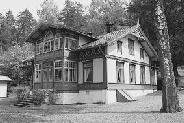

Soverommet er lite og enkelt med såvidt plass til en bred seng, men likevel ganske så kuriøst. Rommet har nemlig ikke et eneste vindu. Derimot er det laget to skipsventiler på veggen ut mot fjorden.Roald Amundsens hjem, "Uranienborg" i Svartskog i Oppegård står der akkurat slik han forlot det i 1928. På baderommet ligger såpestykket han vasket seg med før han dro ut på sin siste reis. Badekåpen henger der også. Amundsen bodde her de siste tyve årene av sitt liv. "Uranienborg" som huset heter, var velutstyrt med mange finesser, men likevel ikke overdådig. Mellom polferdene tilbrakte eventyreren mye av sin tid her. Når han først var hjemme nøt han livet, men ofte dro han på foredragsturneer både i USA og Japan.
På arbeidsværelset eller ved skrivepulten på glassverandaen ble hans bøker og foredrag forfattet. Dette arbeidet var med på å finansiere Amundsens ekspedisjoner, som kostet enormt med penger. Likevel gikk han konkurs i 1926 da han måtte investere i to fly og luftskip i forbindelse med utforskningen av Arktis. Men gode venner hjalp ham slik at han kunne beholde huset.
Den kjente polfareren hadde forøvrig mange venner. Enkelte svært prominente. På veggen i huset hans henger signerte bilder av Kong Haakon og Dronning Maud. Statsminister Nygaardsvold og utenriksminister Halvdan Koht har etterlatt sine signaturer i gjesteboka.
Amundsens beste venn var likevel eskimoen Igpi. Han finner vi avfotografert på en glassdør. Igpi var med på Gjøaekspedisjonen. To eskimopiker bodde hos Amundsen noen år. De delte et lite rom i andre etasje og gikk på Svartskog skole. Men egen familie stiftet Roald Amundsen aldri.
"Uranienborg" full av mye spennende historie. Og det har en praktfull beliggenhet helt nede ved Bunnefjorden. Museet er åpent kl. 11.00 -16.00 fram til 18. september. Omvisning hver time. Mandager stengt.